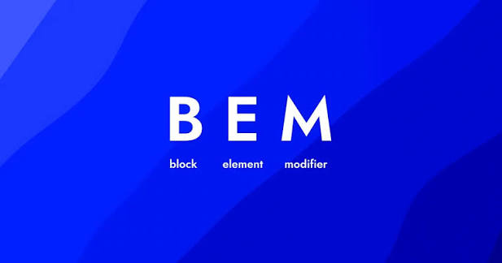
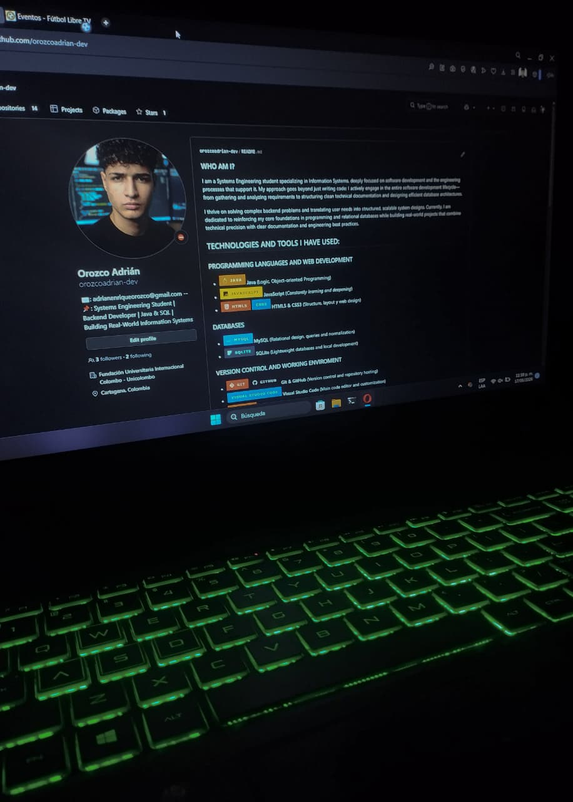
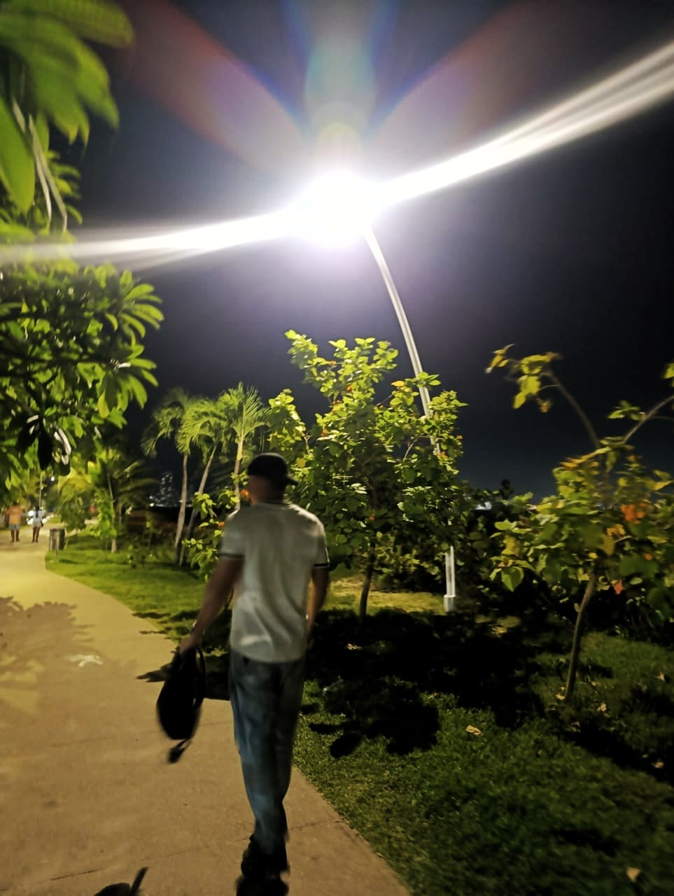
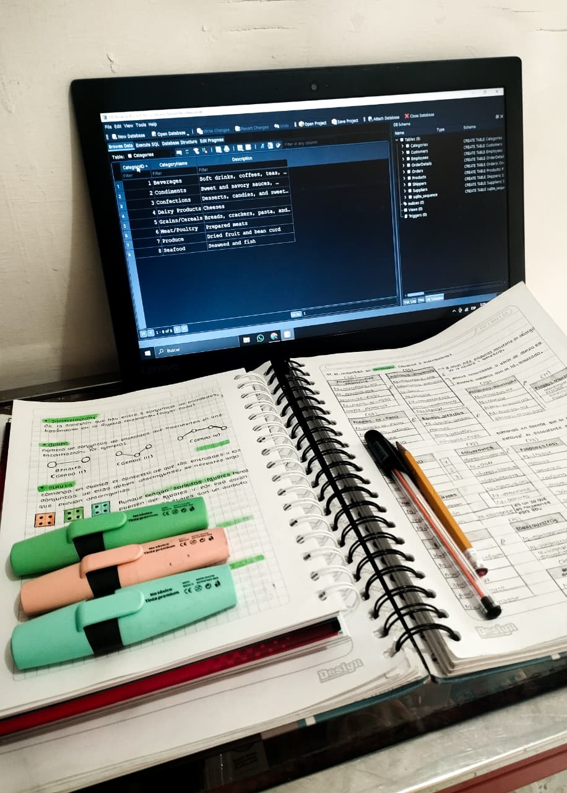

Developer portfolio
¡Hola y bienvenido a mi portafolio virtual! Este espacio ha sido diseñado para compartir mi trayectoria, habilidades y evolución en el mundo del desarrollo de software y la tecnología. Aquí podrás conocer los proyectos en los que he trabajado, las tecnologías que domino, las competencias que he desarrollado y los desafíos que han fortalecido mi experiencia como futuro profesional en Ingeniería de Sistemas.
Además de presentar mis trabajos, este portafolio refleja mi compromiso con el aprendizaje continuo, la innovación y la búsqueda constante de nuevas oportunidades para crecer tanto a nivel técnico como personal. Cada proyecto representa una etapa de mi formación y un esfuerzo por aplicar buenas prácticas, resolver problemas reales y seguir perfeccionando mis conocimientos.
También encontrarás diferentes formas de contacto para establecer conexiones profesionales, colaborar en iniciativas tecnológicas o compartir ideas que impulsen el crecimiento mutuo. Espero que disfrutes explorando este espacio, conozcas un poco más sobre mi proceso de aprendizaje y desarrollo, y que tu visita te permita descubrir la pasión y dedicación que pongo en cada uno de mis proyectos. ¡Gracias por estar aquí!
¿POR QUÉ ESTA WEB?
Este proyecto nació una noche en la que comprendí una realidad que cambió por completo mi forma de aprender: el conocimiento no se fortalece únicamente consumiendo más cursos o resolviendo ejercicios aislados. La verdadera comprensión surge cuando aquello que estudiamos se transforma en una solución real, cuando una idea se convierte en código y el aprendizaje se pone a prueba enfrentando problemas del mundo real.
Por esa razón decidí crear este sitio web. Más que un simple portafolio, representa un espacio donde materializo cada habilidad adquirida, cada concepto aprendido y cada reto superado durante mi proceso de formación. Aquí encontrarás proyectos desarrollados a partir de cursos, investigaciones y horas de práctica, todos construidos con el propósito de demostrar que aprender va mucho más allá de memorizar: significa crear, experimentar, equivocarse, mejorar y seguir avanzando.
Tecnologías que usé aquí:

CSS + HTML + JAVASCRIPT
Contrucción completa de la página web, estructura, SEO, estilo y dinamismo.

Metodología BEM
Forma de trabajo implementada para dar estilos de forma jerárquica a la web.

Responsive Design
Estándar para realizar una página web funcional (En proceso).
Orozco Botero Adrián Enrique



¡Hola! Soy un joven de 20 años nacido en Cartagena de Indias, Colombia. Actualmente curso Ingeniería de Sistemas en la Fundación Universitaria Colombo Internacional (Unicolombo), mientras fortalezco mi formación con el aprendizaje del inglés británico, integrando conocimientos técnicos con un desarrollo personal y profesional constante.
Me desempeño como auxiliar de inventario y también participo en proyectos independientes, experiencias que han fortalecido mi disciplina, compromiso y capacidad de adaptación ante nuevos desafíos. Me considero una persona curiosa, perseverante y enfocada en el crecimiento continuo, siempre buscando aprender, mejorar y superar mis propios límites.
Disfruto el mundo de las motocicletas, el entrenamiento físico, la gastronomía y todo aquello que represente un reto para evolucionar. La tecnología y el desarrollo de software son áreas que despiertan mi creatividad, motivándome a construir soluciones útiles e innovadoras para distintos contextos.
Mis principios, valores y propósito de vida son la base que guía cada decisión que tomo y cada meta que persigo. Este espacio representa una parte de mi historia, mis conocimientos, mis proyectos y la visión profesional que estoy construyendo para el futuro.
TECNOLOGÍAS QUE MANEJO:

CSS + HTML
Estructuras web eficientes, con una excelente indexación en motores de búsqueda y una experiencia de usuario fluida en cualquier dispositivo.

javascript
Enfoque en el dominio de su lógica fundamental, estructura del lenguaje y el uso de funciones flecha para escribir código moderno, limpio y eficiente
Java
Sólida base en los fundamentos del lenguaje, dominio de su sintaxis y aplicación de los pilares de la Programación Orientada a Objetos en proyectos
SQL
Gestión y diseño de bases de datos con MySQL y SQLite, con capacidad para estructurar consultas eficientes y modelar diagramas entidad-relación.